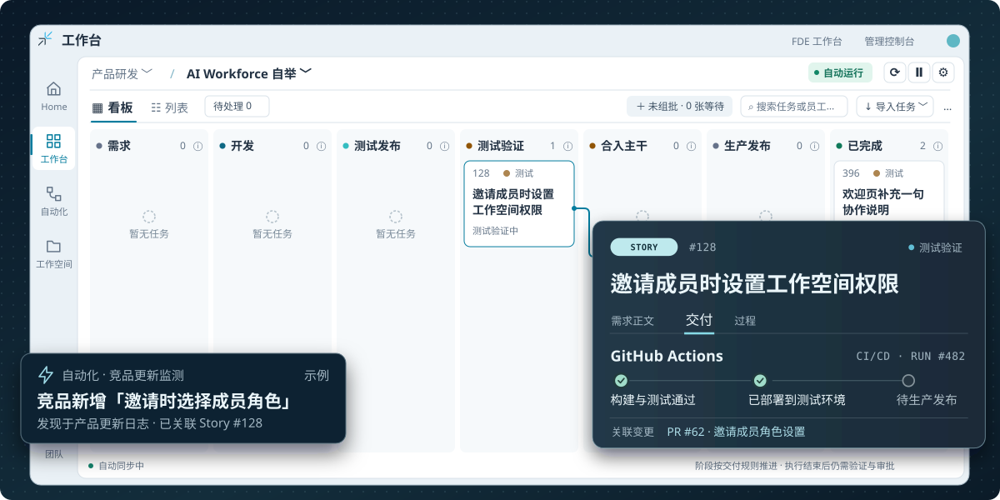

<!doctype html>
<html lang="zh-CN">
  <meta charset="utf-8" />
  <meta name="viewport" content="width=device-width, initial-scale=1" />
  <title>从竞品发现到 CI/CD 交付 · AI Workforce</title>
  <style>
    :root {
      color-scheme: light dark;
      font:
        16px/1.6 MiSans,
        "PingFang SC",
        "Microsoft YaHei",
        system-ui,
        sans-serif;
      color: #182c41;
      background: #fff;
    }
    body {
      margin: 0;
    }
    figure {
      max-width: 56rem;
      margin: 0 auto;
    }
    img {
      display: block;
      width: 100%;
      height: auto;
      aspect-ratio: 1200 / 600;
      border-radius: 14px;
      background: #102a40;
    }
    fieldset[hidden] {
      display: none;
    }
    fieldset {
      display: flex;
      flex-wrap: wrap;
      gap: 4px;
      border: 0;
      margin: 0.8rem 0 0.4rem;
      padding: 0;
    }
    label {
      position: relative;
      cursor: pointer;
      padding: 0.3rem 0.8rem;
      font-size: 0.9rem;
      border-radius: 0.5rem;
    }
    label:has(:checked) {
      background: #def0f7;
      color: #075b76;
      font-weight: 650;
    }
    label:has(:focus-visible) {
      outline: 2px solid #1481a1;
      outline-offset: 1px;
    }
    input,
    legend {
      position: absolute;
      width: 1px;
      height: 1px;
      padding: 0;
      clip-path: inset(50%);
      overflow: hidden;
    }
    p {
      margin: 0 0.3rem;
    }
    @media (prefers-color-scheme: dark) {
      :root {
        color: #e1eaf1;
        background: #121923;
      }
      label:has(:checked) {
        background: #1b3c4e;
        color: #91d9ef;
      }
    }
    @media (max-width: 32rem) {
      label {
        padding: 0.4rem 0.55rem;
      }
    }
  </style>
  <figure>
    
    <figcaption>
      <fieldset hidden>
        <legend>选择要放大的交付环节</legend>
        <label><input type="radio" name="view" value="" checked />全览</label>
        <label><input type="radio" name="view" value="origin" />调研发现</label>
        <label
          ><input type="radio" name="view" value="story" />CI/CD 交付</label
        >
        <label><input type="radio" name="view" value="board" />看板概览</label>
      </fieldset>
      <p aria-live="polite">
        竞品更新监测发现了新的邀请权限选项。团队将发现确认为 Story
        #128，在交付页签跟踪代码变更和流水线结果。
      </p>
    </figcaption>
  </figure>
  <script>
    const captions = {
      origin:
        "示例中的定时调研 Job 读取竞品更新日志，发现邀请成员时可以选择角色。团队确认这项需求后，将它转为 Story #128。",
      story:
        "PR #62 关联到 GitHub Actions 运行 #482。构建与测试通过，变更已部署到测试环境，生产发布仍待执行。",
      board:
        "Backlog 中有两条待办需求，开发员工正在实现成员权限变更记录。Story #128 已进入测试验证。",
    };
    const diagram = document.querySelector("img");
    const caption = document.querySelector("figcaption p");
    const views = document.querySelector("fieldset");
    const overview = caption.textContent;
    views.hidden = false;
    views.addEventListener("change", (event) => {
      const section = event.target.value;
      diagram.src = section
        ? `delivery-board.svg#${section}`
        : "delivery-board.svg";
      caption.textContent = captions[section] ?? overview;
    });
  </script>
</html>
